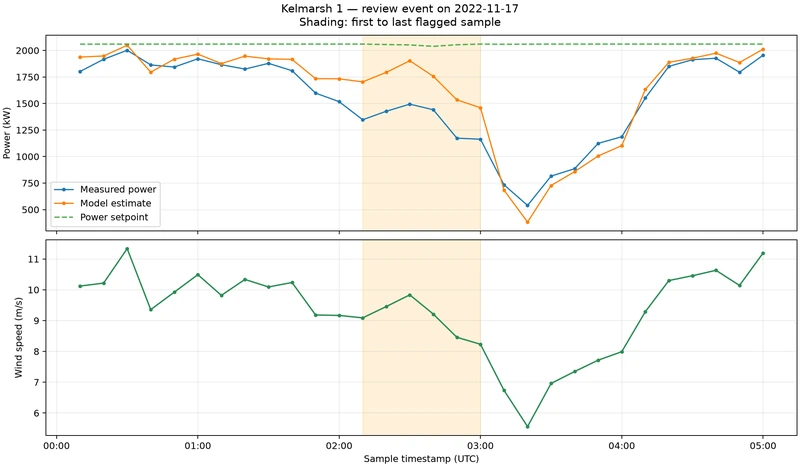

01 Wind energy · Measurement data
Wind Turbine Performance Review
Analyze historical wind-turbine SCADA data and identify sustained deviations for engineering review.
My contribution: Screened data quality, compared reference and regression models, and reviewed deviation events.
5 candidate eventsof sustained power deviation for further engineering review.
Historical analysis; causes unconfirmed. No live telemetry.


Enlarge chart ↗